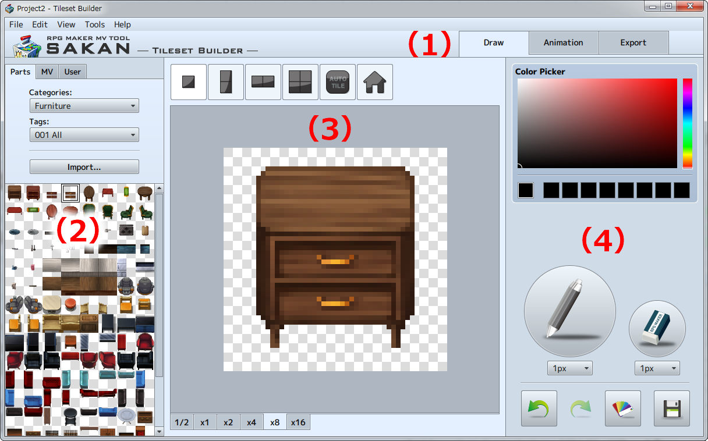

Basic Operations
Name and function of each part of the window.
The tileset builder screen is composed of [Palette] for selecting parts, [Editing Screen] for editing tile images, and [Tools], such as the pen and eraser. There are 3 editing screens, [Draw], [Animation], and [Export], depending on what you want to do.

- (1) [Draw], [Animation], [Export]
-
Select the 3 editing screens depending on what you want to do.
[Basic Operations] → [3 Editing Screens] - (2) Palette
-
Select stamps to use from the 3 palettes: [Parts], [MV Tileset], and [User].
[Basic Operations] → [Palette] - (3) Editing Screen
-
Select tile size, and create stamp.
[Basic Operations] → [3 Editing Screens] - (4) Tools
-
Use tools to adjust stamps on the editing screen such as the pen, eraser, color picker, color, and brightness.
[Basic Operations] → [Tools]